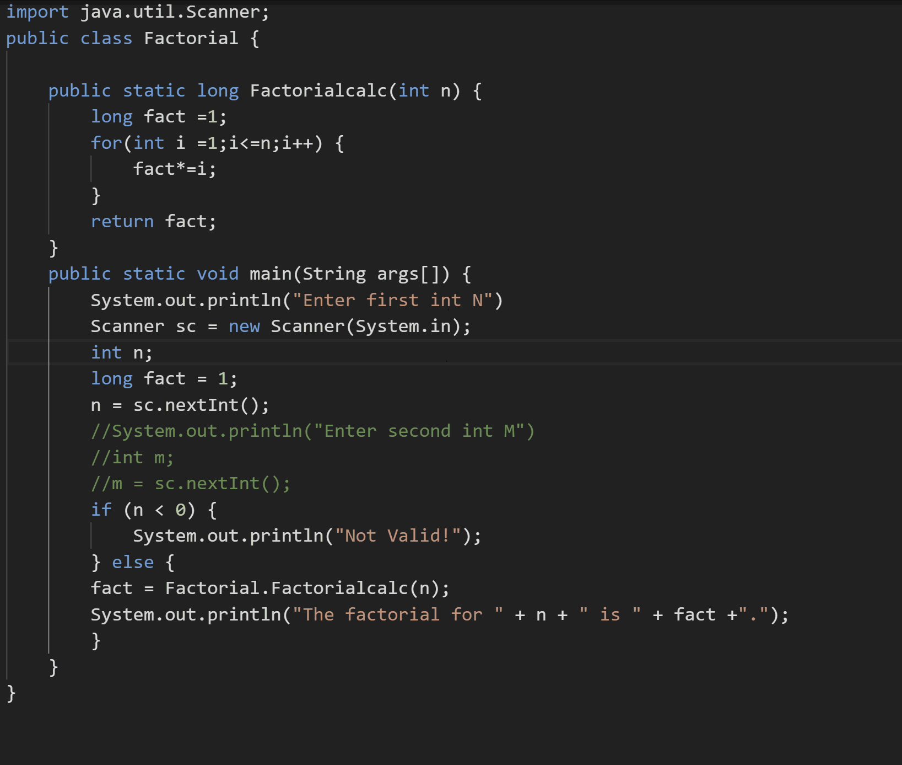

Java — один из самых популярных языков программирования, используемых сегодня.
Этот язык программирования общего назначения с объектно-ориентированной структурой, принадлежащий корпорации Oracle, стал стандартом для приложений, которые можно использовать независимо от платформы (например, Mac, Windows, Android, iOS и т. д.) благодаря возможности "Write Once - Run Anywhere" ("Напиши один код - запусти на любом устройстве). В результате Java получила признание благодаря своей переносимости между платформами, от центров обработки данных мейнфреймов до смартфонов. Сегодня существует более 3 миллиардов устройств, на которых работают приложения, созданные с помощью Java.
Java широко используется в веб-разработке и разработке приложений, а также при работе с большими данными. Java также используется в серверной части нескольких популярных веб-сайтов, включая Google, Amazon, Twitter и YouTube. Он также широко используется в сотнях приложений. Новые фреймворки Java, такие как Spring, Struts и Hibernate, также очень популярны. С миллионами разработчиков Java по всему миру существуют сотни способов изучения Java. Кроме того, Java-программисты имеют обширное онлайн-сообщество и поддерживают друг друга в решении проблем.
Java — более сложный язык для изучения, но опытные разработчики с навыками программирования на Java пользуются большим спросом. Средний разработчик Java зарабатывает около 109 225 долларов в год.